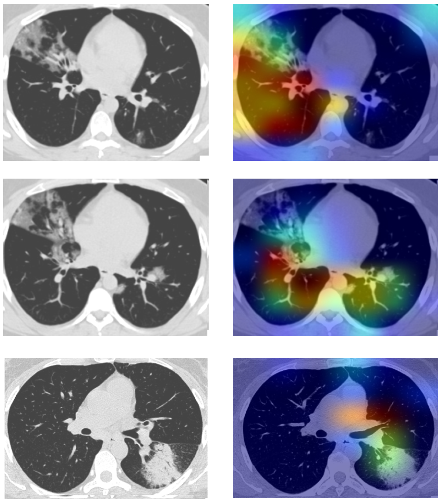
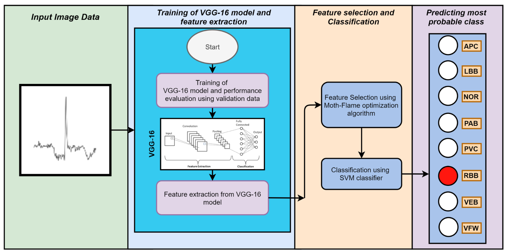
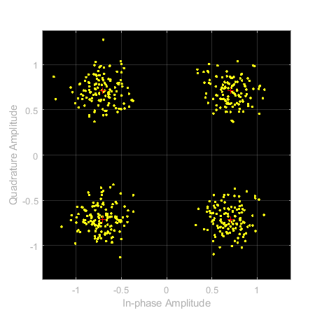

Arindam Majee

Hello!
I am a Project Assistant in the Institute of Advancing Intelligence at The Chatterjee Group Centre for Research & Education in Science & Technology. Here, I am working with, Prof. Swagatam Das and Dr. Avishek Gupta. Along with this I am also a Research Assistant at Machine Learning Research Group (MLRG), Indian Statistical Institute, Kolkata, India working with Prof. Swagatam Das and Kushal Bose. My research interests are in the fields of Artificial Intelligence and Machine Learning, focusing on application of graph sectral approaches on computer vision, natural language processing, social networks.
Earlier I completed my Bachelor of Engineering with First Class Distinction with Honours in Electronics and Telecommunication Engineering from Jadavpur University, Kolkata (QS rank: 601-650, NIRF rank: 4) under the guidance of Prof. Amit Konar and Dr. Pratyusha Rakshit. My undergraduate thesis was on object tracking using reinforcement learning from 2D videos. During my undergraduate degree, I also got the opportunity to work on a variety of exciting projects as a research intern at Robotics, Mechatronics, and Automation Laboratory (RMAL), Toronto Metropoliton University, sponsored by MITACS. .
I am always up for new collaborations, drop me an email if you want to chat!
Recent News
- Aug 2023: Built an AI based system for detecting Alzheimer disease from MRI.
- June 2023: Graduated with Bachelor of Engineering (Hons.) degree in Electronics and Telecommunication Engineering from Jadavpur University.
- June 2023: Joined Institute of Advancing Intelligence, TCG CREST.
- May 2023: Completed all required coursework and projects for my B.E. (Hons.) degree.
- Aug 2022: Completed my virtual internship at Ryerson University, Toronto sponsored by MITACS.
Research Highlights
|  |
Prediction of COVID-19 from chest CT images using an ensemble of deep learning models
Applied Science, MDPI Here we have developed a computerized COVID-19 diagnosis system using chest CT images to help control the spread of the virus, especially in developing countries like India. The study employs deep learning models, including VGG-16, ResNet50, and Xception, and proposes a mechanism to combine them, achieving an impressive 98.79% classification accuracy.
Shreya Biswas, Somnath Chatterjee, Arindam Majee, Shibaprasad Sen, Friedhelm Schwenker, Ram Sarkar
|

|
Breast cancer detection from thermal images using a Grunwald-Letnikov-aided Dragonfly algorithm-based deep feature selection method
Computers in biology and medicine (Elsevier, Impact Factor 4.5), 2021
In the present work, we have proposed a two-stage model for breast cancer detection using thermographic images. Firstly, features are extracted from images using a deep learning model.
To select the optimal subset of features, we use a meta-heuristic algorithm called the Dragonfly Algorithm (DA) in the second step.
Somnath Chatterjee, Shreya Biswas, Arindam Majee, Shibaprasad Sen, Diego Oliva, Ram Sarkar.
|
|  |
Moth-Flame Optimization-Based Deep Feature Selection for Cardiovascular Disease Detection Using ECG Signal
Handbook of Moth-Flame Optimization Algorithm (CRC Press), 2022 This research presents a bi-stage model for detecting cardiovascular diseases (CVD) from electrocardiogram (ECG) signals. Initially, VGG16 is used for feature extraction from ECG data through Transfer Learning. Then, the Moth-flame Optimization algorithm reduces feature dimensionality, and a Support Vector Machine (SVM) classifier .
Arindam Majee, Shreya Biswas, Somnath Chatterjee, Shibaprasad Sen, Seyedali Mirjalili, Ram Sarkar
|
|  |
UAV, A&A : CEMILAC Bangalore Swarm UAVs Communication
CEMILAC Bangalore
Improving predictions on structured tabular data using intersample attention and contrastive learning.
Arindam Majee, Rahul Saha, Snehashis Roy, Sarit Roy Chaudhury S. Roy, Srilekha Mandal, Sayan Chatterjee
|